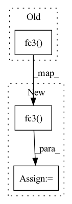

Pattern ID :2528

Before Change
def forward(self, x):
h1 = F.relu(self.fc1(x))
h2 = F.relu(self.fc2(h1))
h3 = F.relu(self.fc3(h2))
h4 = torch.sigmoid(self.fc4(h3))
return h4
After Change
x = self.fc2(x)
x = F.relu(x)
x = self.dropout1(x)
x = self.fc3(x)
x = F.relu(x)
x = self.dropout1(x)
x = self.fc4(x)
x = F.relu(x)
In pattern: SUPERPATTERN
Frequency: 4
Non-data size: 3
Instances
Fragment ID: 14779457
Project Name: erfaniaa/commit-type-detection
Commit Name: f120a95d968c8ee3e60be8f1f6073263f0c1780d
Time: 2020-02-11
Author: erfan.aa@gmail.com
File Name: network.py
M Class Name: Network
N Class Name: Network
M Method Name: forward(2)
N Method Name: forward(2)
M Parent Class: nn.Module
N Parent Class: nn.Module
M File Name: network.py
N File Name: network.py
M Start Line: 16
M End Line: 20
N Start Line: 24
N End Line: 38
'>
Before Change
result = self.act1(self.fc1(all_states))
combined = t.cat([result, acts], dim=1)
result = self.act2(self.fc2(combined))
return self.fc4(self.act3(self.fc3(result)))
if __name__ == "__main__":
After Change
state_action = t.cat([all_states, action], dim=1)
q = t.relu(self.fc1(state_action))
q = t.relu(self.fc2(q))
q = self.fc3(q)
return q
if __name__ == "__main__":
'>
Fragment ID: 14779465
Project Name: iffix/machin
Commit Name: e48eb313f904f75c9b561322c743520f4a1250b5
Time: 2020-04-22
Author: hanhanmumuqq@163.com
File Name: mains/main_mcarrier_maddpg.py
M Class Name: Critic
N Class Name: Critic
M Method Name: forward(4)
N Method Name: forward(4)
M Parent Class: nn.Module
N Parent Class: nn.Module
M File Name: mains/main_mcarrier_maddpg.py
N File Name: mains/main_mcarrier_maddpg.py
M Start Line: 65
M End Line: 69
N Start Line: 61
N End Line: 68
'>
Before Change
d2 = F.relu(self.fc1_2(log_pi))
d = torch.cat([d1, d2], 1)
d = self.fc2(d)
d = self.fc3(d)
return d
class DWBC(object):
After Change
d2 = F.relu(self.fc1_2(log_pi))
d = torch.cat([d1, d2], 1)
d = F.relu(self.fc2(d))
d = F.sigmoid(self.fc3(d))
d = torch.clip(d, 0.1, 0.9)
return d
'>
Fragment ID: 14779464
Project Name: ryanxhr/dwbc
Commit Name: b3791e408af7125fde12cda1cdeaefbaa400aacc
Time: 2022-06-30
Author: xuhaoran8@jd.com
File Name: algos/DWBC.py
M Class Name: Discriminator
N Class Name: Discriminator
M Method Name: forward(4)
N Method Name: forward(4)
M Parent Class: nn.Module
N Parent Class: nn.Module
M File Name: algos/DWBC.py
N File Name: algos/DWBC.py
M Start Line: 93
M End Line: 95
N Start Line: 81
N End Line: 84
'>
Before Change
state_action = t.cat([all_states, action], dim=1)
q = t.relu(self.fc1(state_action))
q = t.relu(self.fc2(q))
q = self.fc3(q)
return q
if __name__ == "__main__":
After Change
state_action = t.cat([all_states, action], dim=1)
q = t.relu(self.fc1(state_action))
q = t.relu(self.fc2(q))
q = t.relu(self.fc3(q))
q = self.fc4(q)
return q
'>
Fragment ID: 14779468
Project Name: iffix/machin
Commit Name: a4cc3dc8efa47c25264d73907d2e751e6c8a0818
Time: 2020-04-23
Author: hanhanmumuqq@163.com
File Name: mains/main_mcarrier_maddpg.py
M Class Name: Critic
N Class Name: Critic
M Method Name: forward(4)
N Method Name: forward(4)
M Parent Class: nn.Module
N Parent Class: nn.Module
M File Name: mains/main_mcarrier_maddpg.py
N File Name: mains/main_mcarrier_maddpg.py
M Start Line: 66
M End Line: 67
N Start Line: 67
N End Line: 69